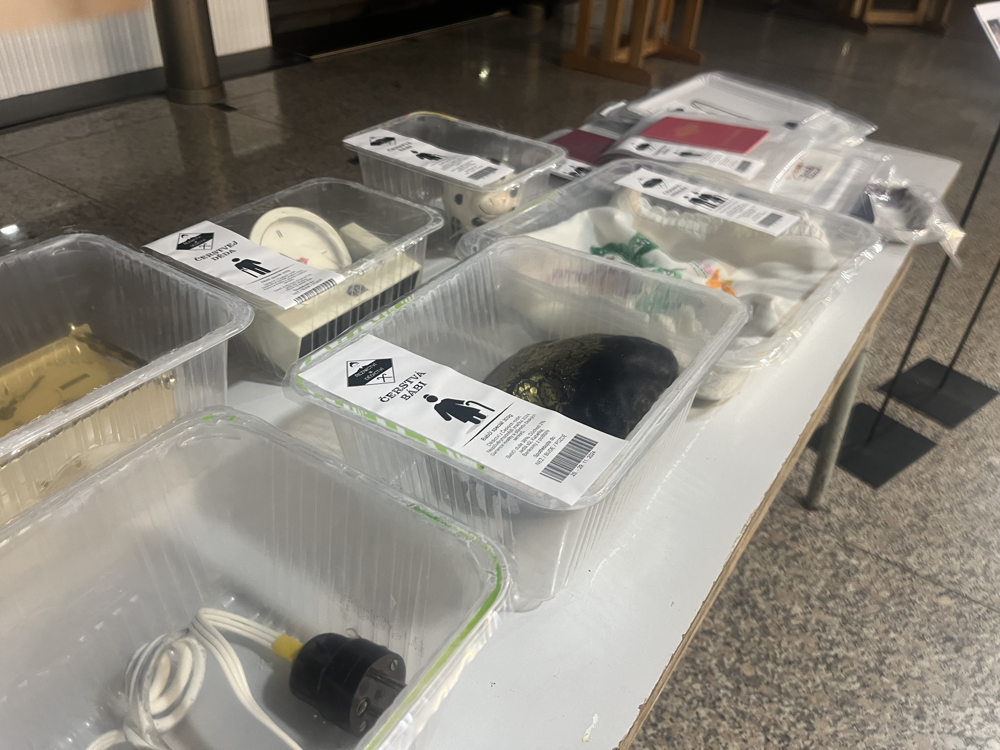
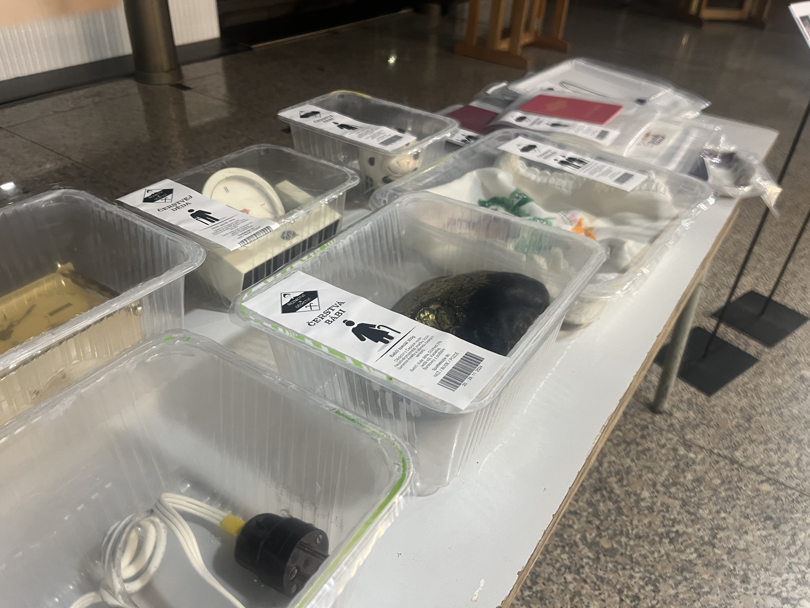

Volné umění
Dědictví porcující řeznictví 2024
Lovecká sezóna se blíží!!!
Dravý supy vyhlížejí ke svým rodným domovů. Obývané svými předky, jež kusem masa stávají se v zapomnění. Vnoučeti se poslední čokoládka roztéká v babiččině kabelce. A prostorem rezonuje poslední dozvuk chtivé zvěře.

 

{kind=link}
Puff 2023
Yo-Yo machines jsou hravá zařízení pro nonverbální komunikaci mezi lidmi. Zařízení posílá světelné signály, mechanické pohyby a zvuky. Yo-Yo Machines jsou open-source produktem studia Interaction Research Studio. Light Touch je konkrétní zařízení, které umožňuje posílat světelné signály s dalšími lidmi přes internet. Můžete si vybrat barvu, kterou odešlete svému kamarádovi a pošlete barvu na druhé zařízení. Můžete signály odesílat hned nebo později.
Puff – zařízení pro kamarády, partnery a milence
V době mobilních telefonů toto zařízení může být neužitečné, ale se všemi SMS, MMS, smajlíky. Ztrácíme část intimity v komunikaci. Původně autor zamýšlel zkombinování dvou Yo-Yo machines: Light Touch a Knock Knock. V průběhu práce si uvědomil náročnost dané techniky. Tvorba byla velmi dlouhá, ale zde je Puff!
{kind=link}
My little abortion 2021
Projekt zabývající se tématem interrupcí, které jsou velmi řešeny v Polsku, Slovensku, Maďarsku, USA a v dalších zemí. První ideu zabývat se tímto tématem dostal autor na protestu v Praze před Slovenskou ambasádou v roce 2021, kde padla myšlenka toho, že i když u nás nejsou interrupce zakázaný, tak je stále možné, že i podobná situace může v České republice nastat. V průběhu práce na projektu se autor zabýval také tématem čarodějnictví, kdy objevil spojitost mezi tím jak byly ženy utlačovány kdysi a jak jsou utlačovány dnes, tím že se jim snaží odebrat práva na interrupce. Projekt má upozornit na daný problém. Proto vytvořil sérii sošek.
Dané sošky jsou tvořeny z hlíny a sádry. Jako základ byla použita součást z těla hračky miminka či panenky, která byla spojena s hlínou nebo sádrou. Ze začátku tvořil za pomoci hlíny, později začal také využívat sádru, u které objevil nový způsob využití. Jelikož sádru většinou naléval do objektů, aby vznikl nějaký tvar, tak byl výsledek kolikrát velmi překvapivý na rozdíl od hlíny, kde celé torzo tvořil sám, tak jak si představoval.
Ale takový osobní průlom pro autora přišel ve chvíli, kdy tvořil sochu, kde celé tělo miminka zalil v sádře a poté vykutával za pomocí dláta. Tahle socha byla velmi vyčerpávající a časově náročná. Byl to takový jakýsi porod, a i lidé v autorově okolí tuhle sochu začali připodobňovat porodu, proto se rozhodl, že sochu nazve Nedokončený porod.
Sochy jsou vystaveny v ohrádce, která zpodobňuje dětský koutek. Ohrádka je vytvořena sítí, na níž jsou pověšeny novinové články, které souvisí s kauzami a událostmi spojené s interrupcemi.
{kind=link}
{kind=link}
{kind=link}
{kind=link}
{kind=link}
{kind=link}
{kind=link}
{kind=link}
{kind=link}
Fine arts
Inheritance of the Butchering Slaughterhouse 2024
The hunting season is coming!!!
Ravenous vultures gaze toward their ancestral homes. Dwellings of their forebears, who become mere scraps of flesh lost to oblivion. The last chocolate melts in the grandchild's hand, buried in grandma's purse. And the space echoes with the final reverberations of the ravenous beasts.
Puff 2023
Yo-Yo machines are playful devices for nonverbal communication between people. Devices send expressive signals like light, mechanical movements, and sounds. Light Touch is a device that allows you to send color signals to each other across the internet. You can choose a color that you can send to your friend and that will pulse on your friend's device. You can send these color signals in realtime or send them later.
Puff – device for friends, partners and lovers
In the end I decide to make device for friends, partners and lovers. In the era of mobile phones, it can be useless, but with all these SMS, MMS, emojis... we losing part of the intimate contact. I was thinking about combinate two Yo-Yo machines: Light Touch and Knock Knock. But during of working I realize that would be really hard to make. The way of making was really long, but here is the Puff!
My little abortion 2021
In my exam project, I decided to focus on the topic of abortions, which are heavily debated in Poland, Slovakia, Hungary, America, and other countries. I got the first idea to explore this topic at a protest in Prague in front of the Slovak embassy, where the thought arose that even though abortions are not banned here, a similar situation could still occur. Throughout the semester, we also dealt with the topic of witchcraft, and here I discovered a connection between how they were oppressed in the past and how they are oppressed today, as people try to take away their rights to abortions. The exam project is meant to draw attention to this problem, so I created a series of figurines.
These figurines are made of clay and plaster. I always used a part of a toy baby's body as the base, which I then connected with clay or plaster. At first, I made them using clay, but later I also started using plaster, which I discovered was a new way of using it. Since I usually poured plaster into objects to create a certain shape, the result was often surprising compared to clay, where I could create the entire torso as I imagined it.
However, my personal breakthrough came when I was making a sculpture where I poured plaster over the entire body of the baby and then carved it out with a chisel. This sculpture was very exhausting and time-consuming. It was like giving birth, and people around me started to liken this sculpture to childbirth, which is why I decided to call it "unfinished birth". The figurines are displayed in an enclosure that represents a children's corner. The enclosure is made of a net, on which newspaper articles related to cases and events related to abortions are hung.